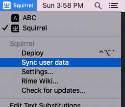
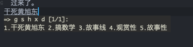

Rime输入法同步
目前我在Mac上以及emacs里分别使用Rime输入法，有两个缺陷：
- 一旦系统损坏，之前的输入习惯就都丢失了
- emacs与操作系统的词库是独立的
因此需要统一。主要研究了这篇博客：https://havee.me/mac/2015-05/rime-configuration-summary.html
坚果云
需要配置一个云盘来存储自己的文件。这里选择坚果云，目前免费上传1G/月，下载3G/月，非常良心。而专业版也只有200一年，非常值得拥有。
配置完成后，将同步文件夹设为例如~/Work/cloud 。
在其下新建一个用来同步Rime的文件夹Rime。
MacOS
fork了一个配置：https://github.com/slegetank/rime-files。
MacOS的Rime默认的配置路径在：~/Library/Rime。将default.custom.yaml覆盖过去。
另外，对其下的installation.yaml最下面加上一行：
sync_dir: "/Users/xxx/Work/cloud/cloud/Rime"
将installation_id设置为一个用来区分终端的字符串，例如：
installation_id: "mac"
点击同步： 。此时去看Rime文件夹下会多一个mac文件夹，里面是自己的配置以及自己平时的输入习惯文件。
installation_id的作用是各平台的配置不同步，而词库同步，简直完美。
emacs
emacs的rime配置文件在liberime-start的时候设置，我的在~/.emacs.d/pyim/rime 。执行同样的步骤：
- 将default.custom.yaml覆盖过去。注意参考https://github.com/tumashu/pyim/issues/261, 将候选词数量提高。
- installation.yaml添加sync_dir，installation_id设置为“emacs”。
- 调用(liberime-sync-user-data)
此时会发现cloud/Rime文件夹下多了一个emacs文件夹。此时，在emacs中用rime打字的时候会发现，平时浏览网页、QQ聊天时候自己写过的词汇也同步过来了。

舒坦！